Place fastener components
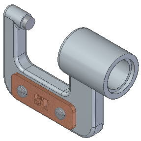
In the next few steps, place two screws that fasten the name plate to the frame into the assembly.
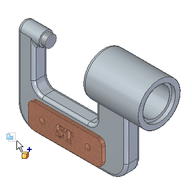
Display the Parts Library.
Drag Screw2.par from the Parts Library tab and drop it into the assembly.
Because the axial orientation of fasteners is typically not important, use FlashFit to fully position the part by selecting a cylindrical edge on the fastener and the name plate.
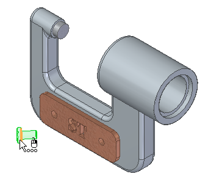
Position the cursor over the fastener as shown in the top illustration, and wait for the QuickPick cursor to display.
Right-click, then use QuickPick to select the cylindrical edge on the fastener shown in the bottom illustration.
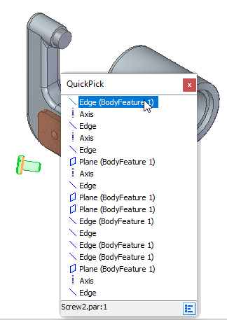
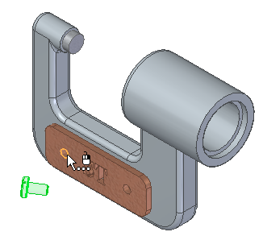
Because a cylindrical edge was selected in the previous step, Solid Edge filters the possible selections in this step to only cylindrical edges.
-
Select the cylindrical edge on the name plate shown in the illustration above.
Based on how the cursor is positioned, QuickPick may or may not be available.
The fastener is fully positioned in the assembly, as shown below.
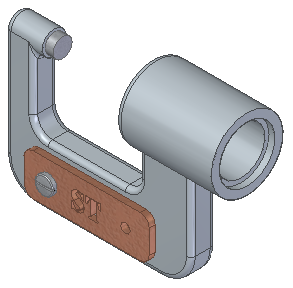
If the fastener is placed in the assembly backwards as shown in the following illustration, take the steps to correct it.
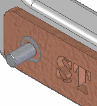
-
In PathFinder, click the Screw2.par entry.
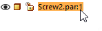
-
At the bottom of the graphics window, click the Planar Align entry.
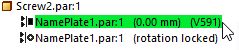
-
Right-click and select Flip from the list of shortcut commands.
The fastener is correctly repositioned.
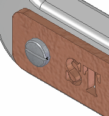
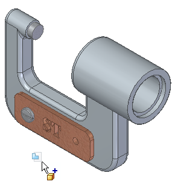
-
From the Parts Library tab, drag another Screw2.par part and drop it into the assembly at the approximate location shown.
Use FlashFit again to fully position the fastener using cylindrical edges.
Use QuickPick to select the cylindrical edge on the fastener shown in the illustration.
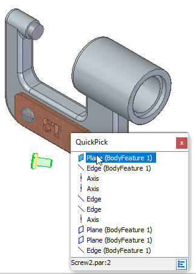
Select the cylindrical edge on the name plate.
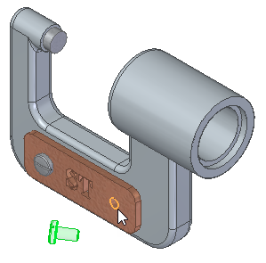
The fastener is fully positioned with respect to the name plate.
The second fastener is positioned in the assembly.
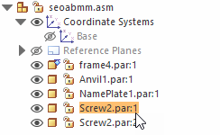
-
In the top pane of PathFinder, click the Screw2.par:1 entry.
Notice that mate and align relationships were applied, similar to the name plate part, and are shown in the bottom pane of PathFinder.
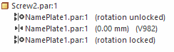
Although edges were selected rather than faces, Solid Edge determined which faces the edges belonged to, and applied the appropriate relationships.
You have finished placing the fasteners in the assembly.
-
On the Quick Access toolbar, choose Save
 .
.